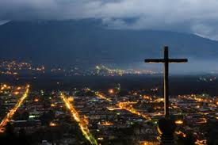

HOLA BIEIVENIDOS A GUATEMALA
Entre las atracciones turísticas del país destacan el parque nacional Tikal, declarado Patrimonio de la Humanidad, por la Unesco en 1979 por sus
ruinas antiguas de la cultura mesoamericana, la ciudad colonial de Antigua Guatemala, también Patrimonio de la Humanidad en 1979 por su inmenso valor histórico y cultural,
y sus paisajes montañosos y enclaves arqueológicos mayas.
Pricipales lugares turísticos:
- La Plaza de la Constitución: La plaza de la Constitución, también comúnmente llamada Parque Central, es la mayor plaza de Guatemala, rodeada al norte por el Palacio Nacional, antigua sede del Gobierno.
- Centro histórico de la Ciudad de Guatemala: El centro histórico de la Ciudad de Guatemala es el área ocupada por el asentamiento original de la Nueva Guatemala de la Asunción entre 1776 y 1892, antes de que se iniciara la expansión de la ciudad hacia los cuatro puntos cardinales, especialmente hacia el Sur.
- Zoológico La Aurora: El Zoológico La Aurora es un jardín zoológico en la ciudad de Guatemala, Guatemala. Es uno de los jardines más grandes de la ciudad y uno de los destinos turísticos más visitados, esta idea surgió durante el gobierno de José María Orellana, quién en 1892 adquirió la Finca Nacional La Aurora, por diversas razones el propósito de hacer el zoológico no se llevó a cabo, hasta en el año de 1924, cuando se decidió por realizar el proyecto.
- Museo del Ferrocarril de Guatemala: El Museo del Ferrocarril de Guatemala es una entidad del gobierno que está dedicado a la custodia del ferrocarril de Guatemala desde su origen hasta la actualidad. Ocupa la antigua estación ferroviaria en la Ciudad de Guatemala.

- Mapa en Relieve de Guatemala: El Mapa en Relieve de Guatemala es un mapa en relieve de Guatemala erigido a nivel del suelo y en dos escalas: 1:10,000 para la extensión horizontal, y 1:2,000 para la vertical,sobre una superficie aproximada de 1,800 metros cuadrados.

- Museo Nacional de Arqueología y Etnología de Guatemala: El Museo Nacional de Arqueología y Etnología (MUNAE) es una institución pública guatemalteca encargada de la conservación, investigación y difusión de los bienes arqueológicos y etnológicos, pertenecientes al Patrimonio Cultural de la Nación de Guatemala.
- Cerro de la Cruz (Antigua Guatemala): El Cerro de la Cruz (antes conocido como el Cerro del Manchen) es una pequeña montaña que podemos encontrar cerca de la ciudad de Antigua Guatemala. Su nombre actual es debido a una cruz que custodia la ciudad.

- Arco de Santa Catalina: El Arco de Santa Catalina es uno de los lugares más reconocidos de la ciudad de Antigua Guatemala. Es visitado anualmente por miles de turistas que acuden a la ciudad que ha sido declarada Patrimonio de la Humanidad por la UNESCO.

- Sierra de los Cuchumatanes: La sierra de los Cuchumatanes es una prominente cordillera situada al oeste de Guatemala, de dirección Oeste-Este, que cruza el sector meridional del departamento de Huehuetenango y el centro del departamento de Quiché. Es la sierra no volcánica de mayor elevación de toda Centroamérica.
- San Francisco El Alto: San Francisco El Alto («San Francisco» en honor a su santo patrono Francisco de Asís; «El Alto», por su ubicación geográfica en los alto de una colina empinada) es un municipio del departamento de Totonicapán de la región sur-occidente de la República de Guatemala. Celebra su fiesta titular el 4 de octubre de cada año en honor a su santo patrono.
- Hotel Casa Santo Domingo: El Hotel Casa Santo Domingo es un hotel de 5 estrellas y museo en Antigua Guatemala, Guatemala. Está localizado en el antiguo Convento de Santo Domingo, que alguna vez fue uno de los conventos más grandes de América.
- Castillo de San Felipe de Lara: El castillo de San Felipe de Lara es una fortaleza ubicada en el municipio de Livingston en la embocadura del río Dulce con el Lago de Izabal en el oriente de Guatemala. Este castillo tenía tres funciones: ser un fuerte militar, una prisión y además un centro aduanero.

Después de todo esto, ¿aún dudas en visitarnos? No te arrepentiras...
¡TE ESPERAMOS!